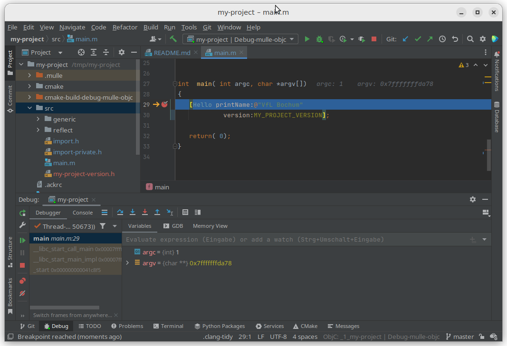

Intro
mulle-objc is a derivative of Objective-C, which by itself is an extension of the C language. Objective-C support is quite good in various IDEs. This little pamphlet shows how to setup various editors and IDEs to good effect to develop mulle-objc programs.

Install mulle-objc
You need to install a few packages to get things rolling. These packages are common to all IDE setups. As they differ between platforms and are subject to change occasionally, the install instructions aren’t replicated here.
foundation-developer
Install foundation-developer. The instructions how to do this are on that given page. If you have problems with it put up an issue in the github bugtracker.
mulle-clang
This step may not be necessary, if you installed foundation-developer with
a package manager like brew or apt. Fetch the newest mulle-clang version from
mulle-clang-project
and install.
mulle-gdb
Fetch the newest mulle-gdb version from mulle-gdb and install.
Debugging on macOS is likely broken, unless you have turned off SIP
The fork in the road
From here choose an IDE or editor and continue:
- Install CLion and continue here
- Install Sublime Text and continue here
- Install Visual Studio Code and continue here